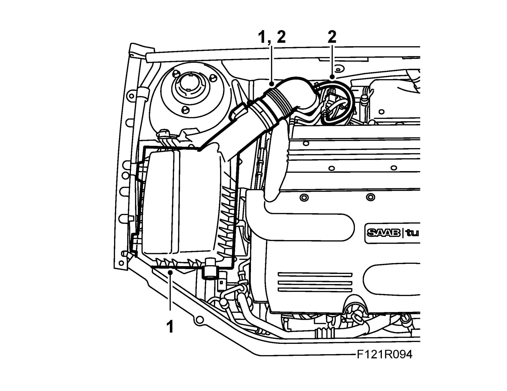
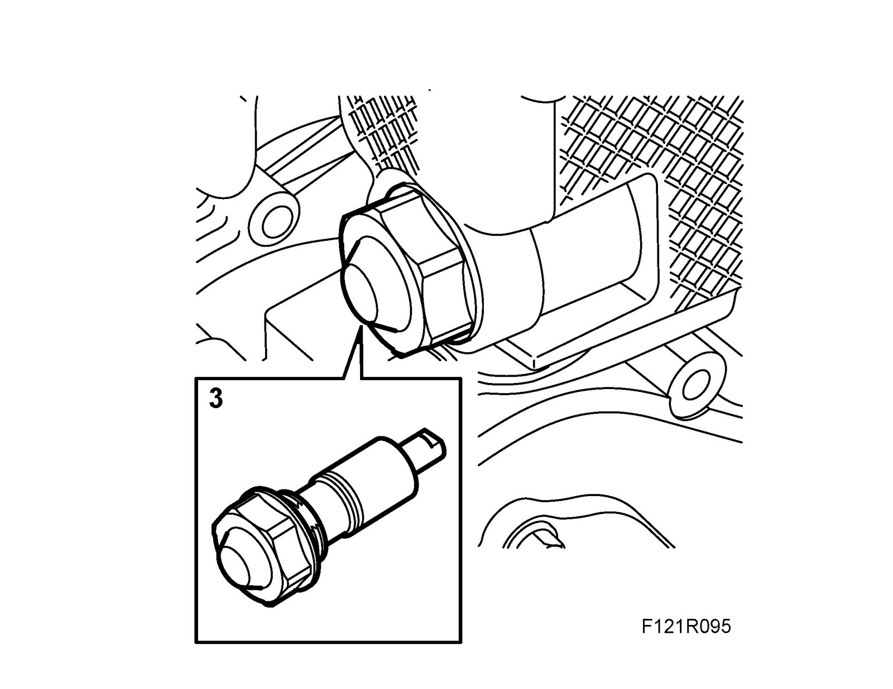
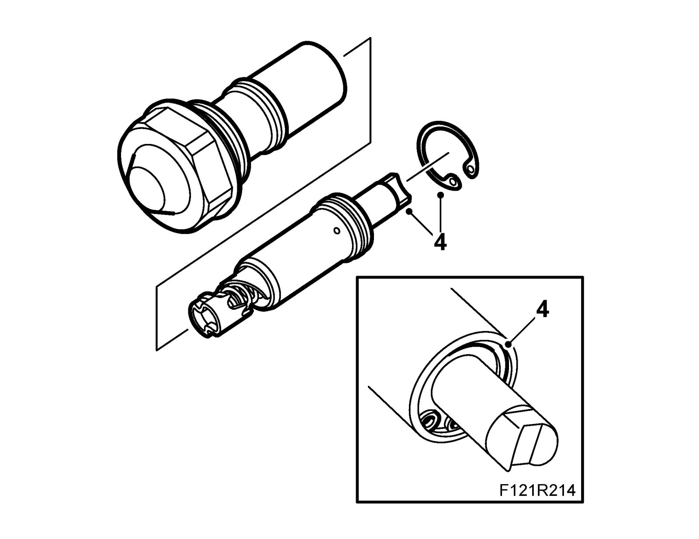
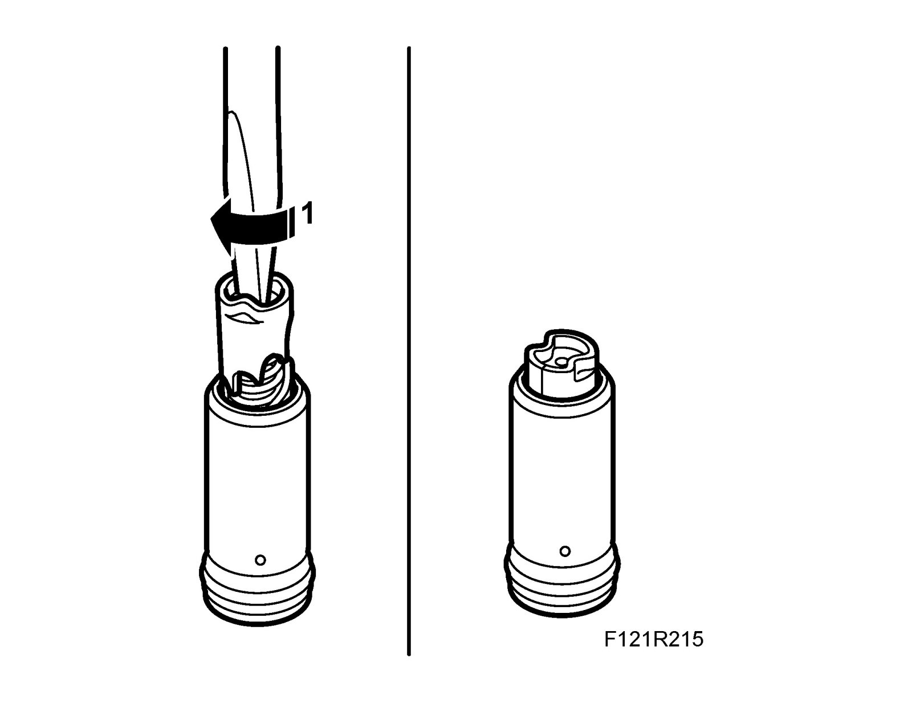
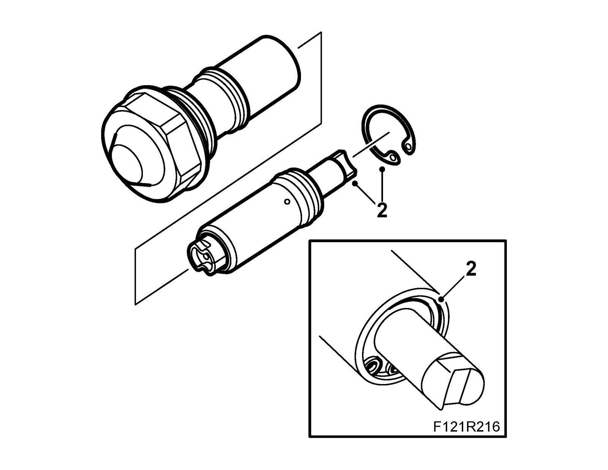
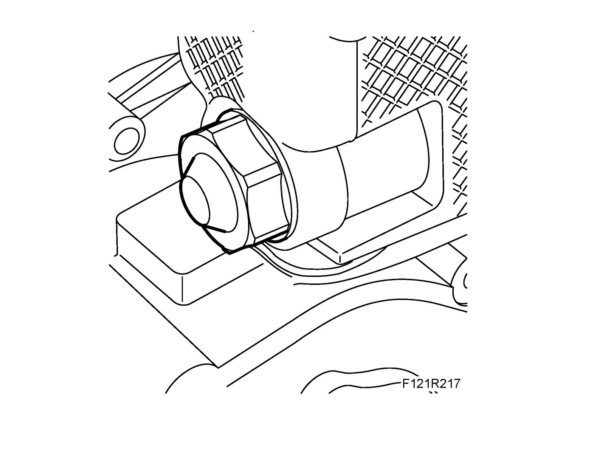
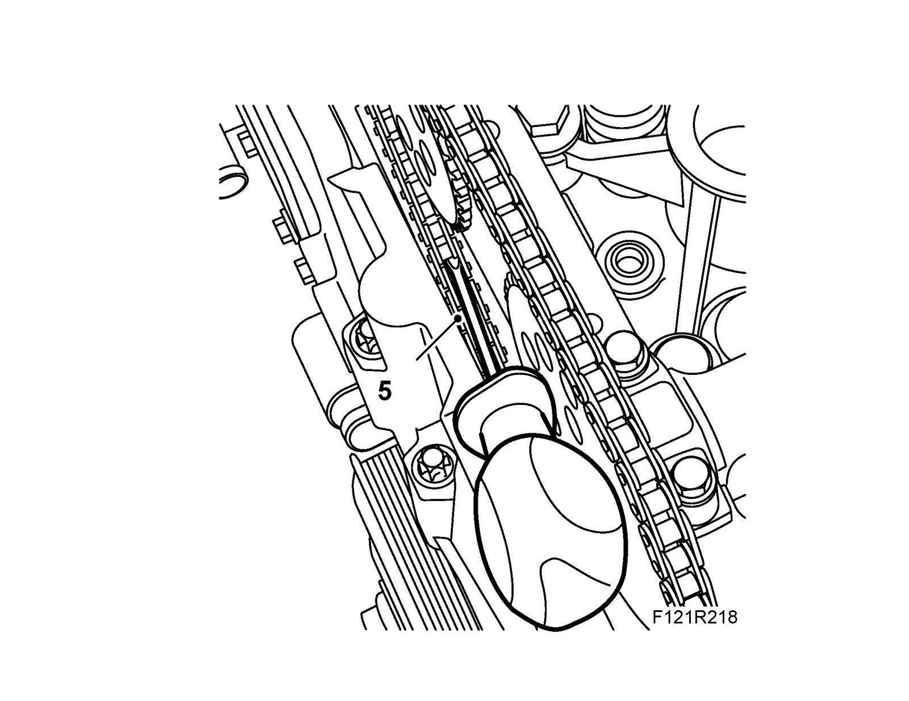

Camshaft Timing Chain Tensioner
Timing chain tensionerTo remove
1. Detach the turbocharger intake hose from the filter casing. Remove the cover and filter from the filter casing.

2. Detach the hoses from the intake hose. Remove the intake hose.
3. Remove the chain tensioner. Use 83 96 129 Oil filter tool, and camshaft drive chain tensioner.

4. Remove the lock ring from the chain tensioner and remove the piston.

To fit
1. Turn the camshaft drive tensioner clockwise with a screwdriver until it engages in the tensioned position.

2. Place the plunger in the chain tensioner sleeve. Fit the circlip and check that it is fitted correctly in the groove.
Note
Check that the O-ring and gasket are intact. If damaged, replace the chain tensioner assembly.

3. Fit the chain tensioner.
Tightening torque 75 Nm (55 lbf ft)

4. Remove the camshaft cover.
5. Release/activate the chain tensioner by carefully pressing on the transmission chain or chain guide (as shown). Use a screwdriver. Check that the tensioner releases.

6. Fit camshaft cover.